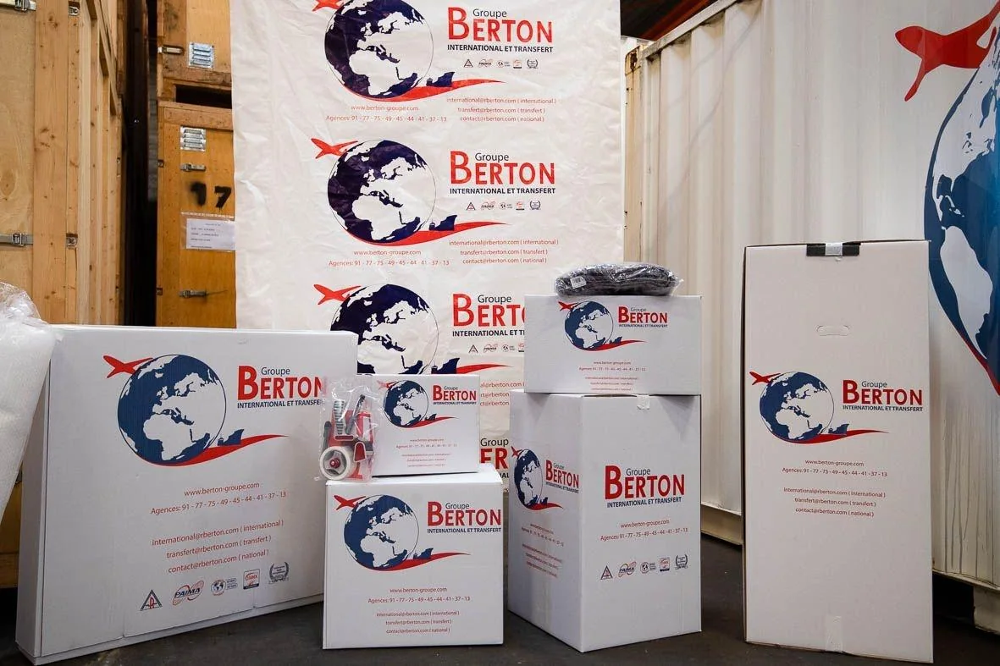
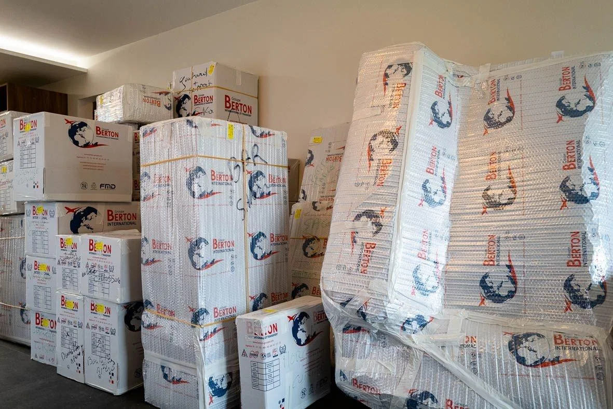
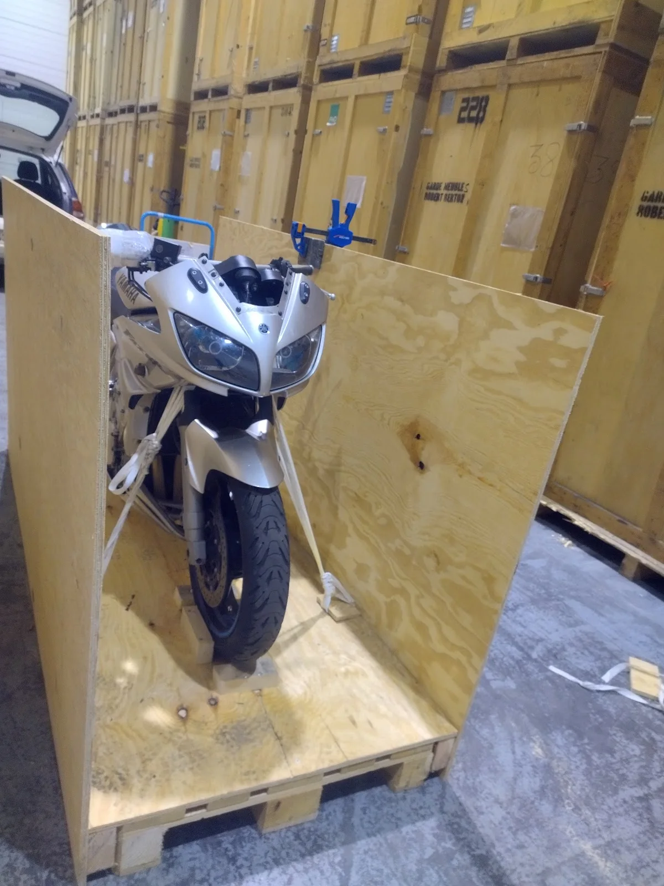

★★★★★
“Christian, Damien et Eric ont vraiment été très professionnels lors de notre déménagement. Ponctualité ++, sympathiques, déménagement propre et efficace. Pas de casse. Nous recommandons vivement”
Groupe Berton accompagne particuliers et entreprises depuis trois générations, du déménagement local au projet international, avec des solutions de stockage en complément.
Quatre expertises centrales structurent l’offre du Groupe Berton : déménagement de particuliers, transfert d’entreprise, international et stockage.

01Des formules adaptées au volume à transporter et au niveau d’accompagnement souhaité.
Découvrir →
02Transfert de bureaux, mobilier et équipements avec une organisation pensée pour les professionnels.
Découvrir →Accompagnement des projets longue distance et internationaux, par route, mer ou air selon le besoin.
Découvrir → 04
04Solutions de stockage à Ingré et Ormes pour particuliers comme professionnels.
Découvrir →Implanté à Ingré, le Groupe Berton transmet son métier depuis trois générations et intervient pour des déménagements régionaux, nationaux et internationaux.
Le niveau d’accompagnement varie selon la formule choisie, mais l’objectif reste le même : organiser le transport avec clarté.
Volume, adresses, accès, date et niveau de prise en charge permettent de cadrer le besoin.
Cartons, protection, emballage et démontage sont répartis selon la formule retenue.
Les biens sont chargés et acheminés selon le projet : local, national ou international.
Déchargement, remontage et déballage sont réalisés selon la prestation souscrite.
De la prise en charge du mobilier seul jusqu’au déménagement intégral, les formules actuelles du Groupe Berton couvrent plusieurs niveaux de service.
Vous vous occupez du reste, l’équipe prend en charge le mobilier.
02Transport et livraison de vos cartons et meubles.
03Prise en charge du fragile en plus du transport.
04Emballage de l’ensemble, déballage du fragile.
05Une prise en charge du déménagement de A à Z.

Note Google : 4,5/5 sur 162 avis. Les témoignages ci-dessous reprennent mot pour mot des avis publics fournis dans le dossier.
“Christian, Damien et Eric ont vraiment été très professionnels lors de notre déménagement. Ponctualité ++, sympathiques, déménagement propre et efficace. Pas de casse. Nous recommandons vivement”
“Merci pour votre prestation impeccable depuis le premier contact jusqu’à la livraison. Merci à M. Haas, et à son équipe. Garry et Damien. Professionnels, efficaces, ponctuels mais pas seulement… avenants, prévenants, chaleureux, et avec de l’humour ! Satisfaction pleine et entière, donc !”
“Thierry et Jimmy ce sont très bien occupés du chantier. Parfait ponctualité, travail tout nickel. Merci beaucoup à toute l’équipe.”
“Malakoffhumanis.. déménagements de divers meubles... tres bonne equipe et tres pro... Gary,Thierry,Damien,Alex. Cordialement. Mr Chesneau David”
Retrouvez les pages dédiées aux principales communes déjà présentes sur le site actuel.
Le Groupe Berton accompagne les déménagements de particuliers et d’entreprises, en régional, en national et à l’international. Une solution de stockage peut également compléter le projet si nécessaire.
Cinq niveaux d’accompagnement sont présentés par le Groupe Berton : Gros meubles, Eco, Classique, Supérieur et Grand Supérieur. Ils permettent de répartir différemment l’emballage, le démontage, le transport et le déballage.
Oui. L’entreprise présente des solutions de garde-meuble et de self-stockage à Ingré et Ormes, pour les particuliers comme pour les professionnels.
Vous pouvez préparer votre demande depuis ce site puis la finaliser via le formulaire officiel du Groupe Berton. Vous pouvez également appeler directement l’agence d’Ingré au 02 38 74 60 55.
L’agence est située au 14 Rue Henry Dunant, 45140 Ingré. Un bouton Itinéraire est disponible dans la section contact pour ouvrir Google Maps.
Agence Groupe Berton Orléans–Ingré. Appel direct, itinéraire ou préparation d’une demande de devis.